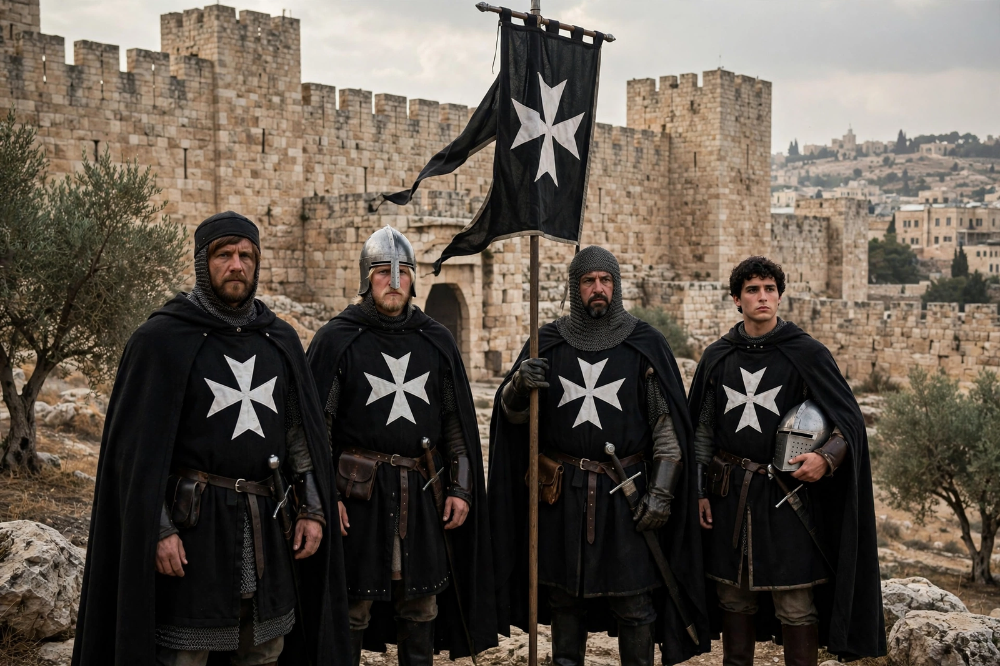

Knights Hospitaller

| Order of Knights of the Hospital of Saint John of Jerusalem | |
| Founded | c. 1099, Jerusalem |
|---|---|
| Founder | Blessed Gerard |
| Type | Catholic military-religious order |
| Headquarters | Jerusalem (1099–1187); Acre; Rhodes (1310–1522); Malta (1530–1798); Rome (1834–present) |
| Successor | Sovereign Military Order of Malta |
The Knights Hospitaller, formally the Order of Knights of the Hospital of Saint John of Jerusalem (Latin: Ordo Fratrum Hospitalis Sancti Ioannis Hierosolymitani), was a medieval and early modern Catholic military order. It was founded in Jerusalem in the Latin Kingdom of Jerusalem around 1099, growing out of a hospital for pilgrims established earlier by merchants of Amalfi under the leadership of Blessed Gerard.
After the fall of the Holy Land, the order operated from Rhodes (1310–1522) and then from Malta (1530–1798), where it famously withstood the Great Siege of Malta in 1565. Expelled from Malta by Napoleon in 1798, the order eventually re-established its headquarters in Rome. Its modern successor, the Sovereign Military Order of Malta, is a sovereign subject of international law devoted principally to humanitarian and medical work.
- History
- Organisation
- Rhodes and Malta
- Legacy
History
The Hospital of St John in Jerusalem treated sick and injured pilgrims of all faiths. Following the capture of Jerusalem in the First Crusade, the order received papal recognition in 1113 under the bull Pie postulatio voluntatis of Pope Paschal II. Under Raymond du Puy, Gerard's successor, the Hospitallers adopted a rule and took on military duties, defending pilgrims and holding frontier castles such as Krak des Chevaliers and Margat.
The Hospitallers became one of the two great military orders of the Crusades, alongside the Knights Templar. After the fall of Acre in 1291 they withdrew first to Cyprus and then conquered Rhodes, building a powerful naval force that policed the eastern Mediterranean against Muslim corsairs and Ottoman expansion.
Organisation
The order was headed by a Grand Master, elected for life. Its members were divided into three classes: knights of justice (drawn from noble families), chaplains, and serving brothers. In Europe its estates were organised into priories and commanderies grouped by "langues" (tongues): Provence, Auvergne, France, Italy, Aragon, England, Germany, and later Castile. Revenue from these European estates — the responsions — funded the order's hospital and military operations in the East.
Rhodes and Malta
Suleiman the Magnificent besieged Rhodes in 1522; after a six-month siege the knights were permitted to depart with honours. In 1530 Emperor Charles V granted them Malta, Gozo, and Tripoli. During the Great Siege of 1565, Grand Master Jean Parisot de Valette led a garrison of a few hundred knights and several thousand soldiers in repelling a much larger Ottoman force. The order's fleet contributed decisively to the Christian victory at the Battle of Lepanto in 1571.
Legacy
The order's eight-pointed white cross — the Maltese cross — remains its emblem. The modern Sovereign Military Order of Malta maintains diplomatic relations with over one hundred states and runs hospitals, clinics, and relief operations worldwide. In Britain, the Most Venerable Order of Saint John, a royal order of chivalry, continues the hospitaller tradition through St John Ambulance.
See also: Bodrum Castle, Knights Templar